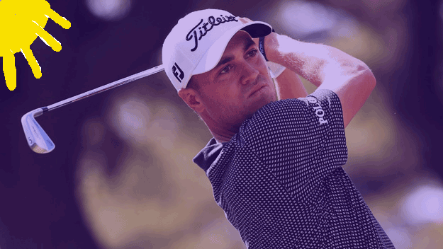

|
I got this image from https://www.titleist.com.au/teamtitleist/b/tourblog/posts/send-us-your-golf-ball-fitting-questions. Originally the image was 300 pixels wide and 168 pixels in height. The file is 6 KB, and is a JPEG. |
|
I had a friend of mine take this picture of me on the golf course. Originally this image was 240 pixels wide and 320 pixels in height. The file is 29 KB, and the image is a JPEG. |
 |
This picture was taken by Bill Frain, a father of one of the kids on the golf team. Originally this image was 320 pixels wide and 213 pixels tall. The file is 167 KB, and the image is a PNG. |
|
| I made this picture using the Adobe Photoshop Application. The image is 600*450 pixels in size. The file is 38 KB and the image is a GIF file. |
| 
| I got the intial image from https://newyork.cbslocal.com/2017/01/16/justin-thomas-sony-open/, and then edited the image using Adobe Photoshop CC 2017. The image was originally 625*352 pixels in size, 91 KB, and is a GIF file. |
|
| I made this picture using the Adobe Photoshop CC 2017 Application. The image was originally 600 by 450 pixels, 9 KB, and a GIF file. |